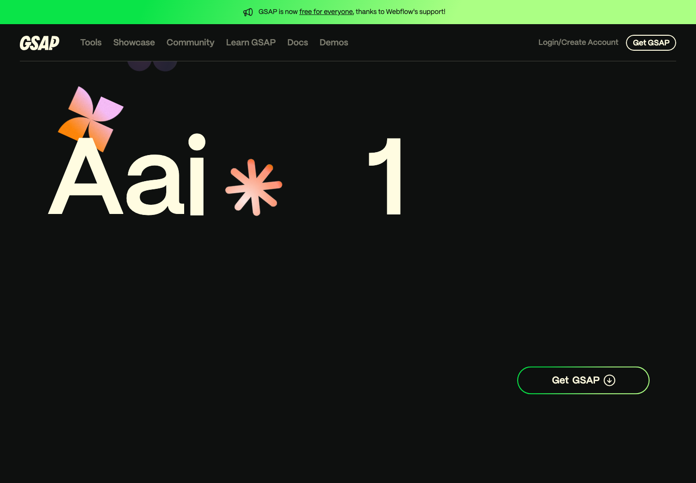

GSAP è una libreria JavaScript per animare elementi su siti, web app e interfacce creative. In pratica: se JavaScript può selezionare un elemento, GSAP può muoverlo, scalarlo, ruotarlo, farlo apparire, sincronizzarlo con altri elementi o controllarlo dentro una timeline.
La cosa interessante non è solo l'effetto wow. È il controllo. GSAP serve quando vuoi animazioni fluide e precise senza impazzire con mille classi CSS, timeout e stati intermedi.
Quando usarlo
- Hero section più dinamiche, senza rifare tutto il sito.
- Scroll animation per landing page, portfolio e pagine prodotto.
- Micro-interazioni su bottoni, card, menu e modali.
- Sequenze animate dove più elementi devono partire nel momento giusto.
- SVG, UI e interfacce creative che devono sembrare più premium.
Il primo snippet
Il modo più semplice per capirlo è questo: selezioni un elemento e dici a GSAP dove deve arrivare.
<script src="https://cdn.jsdelivr.net/npm/gsap@3/dist/gsap.min.js"></script>
<script>
gsap.to(".box", {
x: 200,
rotation: 12,
duration: 0.8,
ease: "power3.out"
});
</script>gsap.to() parte dallo stato attuale dell'elemento e lo anima verso i valori che gli dai. Per sequenze più lunghe puoi usare gsap.timeline(), che ti permette di orchestrare più animazioni come una mini regia.
Perché lo segnerei tra gli AI tools
Perché con Claude Code, Codex o Cursor puoi descrivere l'effetto che vuoi e farti scrivere direttamente la timeline GSAP. Tu ragioni in termini di risultato: "fai entrare il titolo, poi le card, poi il bottone". L'AI traduce quella regia in codice.
Se costruisci siti con AI, GSAP è uno di quei tool che alza subito la percezione del progetto: stesso contenuto, ma con più ritmo, più controllo e più qualità visiva.